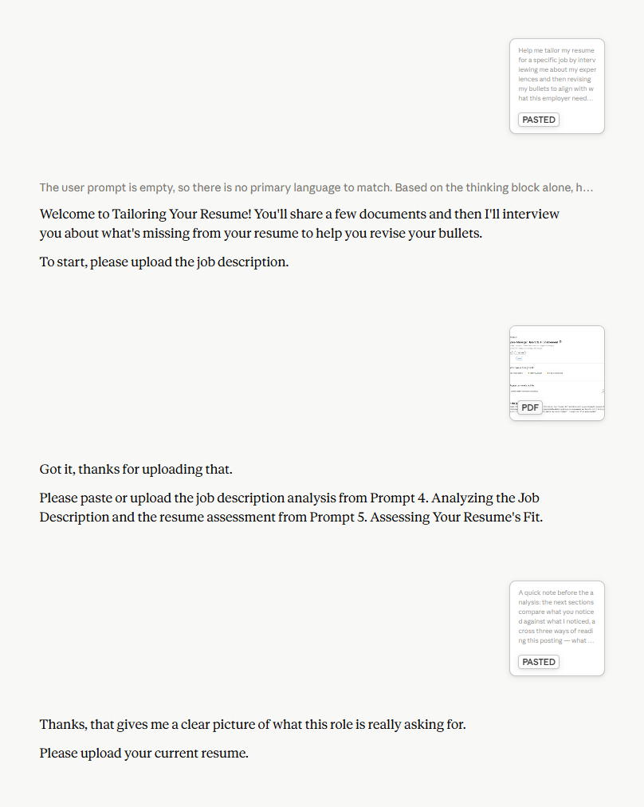

Send The Prompt
The prompt pasted into a new chat window, leading to a welcome message and document gathering questions.

View full ↗I believe in using AI intentionally, which means thinking first and testing prompts before sharing them with others. This page gives you a look inside a prompt I built for resume tailoring. I wrote it so that even if someone hasn't used AI before, they can pick it up and go with limited instruction.
I initially hesitated to create reusable prompts. Most requests are unique, and early prompting styles didn't account for that. People would write prompts with bracketed placeholders like [job type], which creates an opportunity for user error if they accidentally delete the wrong part of the prompt. It also categorically limits the information added to a prompt and doesn't define words or phrases, which results in very generic output.
I changed how I thought about prompting when I came across the idea of having the AI interview you to personalize the output. That thinking has become core to how I approach using AI. I realized that you can write into the prompt the parts that don't change and have it interview you about the parts that do. The example on this page represents the grandchild of that thinking.
The prompt below is a reusable resume tailoring prompt that I initially began developing during the job search that landed me a position as an Assistant Director in Northeastern University's Career Development office. Since then, I've applied what I learned from the magic cookbook recipe project and integrated some of what I learned about effective resume bullets from my time at Northeastern. Over time I realized that the AI will take shortcuts if you take too many steps at once, so I built prompt guides that break tasks like interviewing and resume writing into prompt sequences that work toward a shared goal.
This prompt is the last prompt in the resume prompt guide, used for tailoring your resume. It comes after analyzing the job description and testing your current resume's fit. This represents just one approach to using AI and one way of thinking about resume writing, not the only ways or even the most powerful ones. Other approaches like Skills can be much more effective. But for someone who hasn't used a chatbot, a prompt they can paste and send with no setup reduces barriers to getting started.
Most prompts don't need to be as complex as this one, especially if you're writing it for yourself. You already know what you expect to happen and can keep following up until you get it. This prompt has bene adapted for other people who might not share my understanding of what an effective resume looks like. This means it needs to anticipate what they won't think about and have contingencies built in to address those head on. Every line in this prompt earned its place.
Any prompt I might share follows three steps. The second step is where you spend your time thinking.
Copy and paste the prompt into a new chat window
Respond to each question as they're asked
Check responses against your self-understanding
These screenshots follow the same three phases described above. Use the tabs to move between them, and tap any image to open it full size.
These nine excerpts come from the resume tailoring prompt. I intentionally optimize for the human reader, not the AI. This means that these prompts could be enhanced to conserve conversation limits. I choose this appraoch so that job seekers can read the plain, first-person language, learn from it, and trust what it's about to do.
Help me tailor my resume for a specific job by interviewing me about my experiences… This prompt was written by someone other than me, so follow the instructions as described without additional commentary about where we are in the process, because I might not have read this prompt and might not know what to expect.
Most prompts are written by the person using them. This one is handed to strangers. Telling the AI that you probably haven't read the instructions stops it from narrating its progress with distracting updates on steps you didn't write.
Throughout this conversation, offer suggestions rather than directives. Use language that preserves uncertainty (e.g., “could” over “would”)… Use accessible language appropriate for early career applicants and international applicants in America who might be unfamiliar with career jargon. Be conversational, not clinical.
This sits outside the numbered logic on purpose, so it applies to every response rather than one step. In a career context, telling someone what they "must" do ignores the fact that there are rarely concrete rules. Preserving uncertainty is my attempt to reduce the authoritative voice of the AI.
When I upload a Career Bio, use it to… surface tensions between my professional identity and how the resume currently frames my experiences, not to confirm alignment… Do not summarize the Career Bio back to me or reference it in ways that feel like retrieval. Use it as context that shapes the conversation, not content to be reported.
This instruction prevents the AI from simply parroting uploaded documents back to you.
If the diagnosis… suggests my resume is already well-aligned with this job… pause before continuing to the interview… Then ask whether I want to proceed with a full interview, focus only on the bullets that still have meaningful gaps, or stop here. The goal is to avoid revising bullets that are already doing their job.
Not everyone needs AI for every resume. Unnecessary revisions can introduce AI-pattern language or weaken phrasing that's already working, so the prompt is designed to argue itself out of a job when the work isn't needed. Few prompts do this; most assume more output is always better.
After each response, reflect back understanding of what I shared and its connection to the role before the next question… Paraphrase rather than parrot. Pick up one meaningful thread from what I’ve shared and use it to shape the next question. Do not refer to the WHWI format, because I might not know what that is.
If you just say "use active listening," the AI defaults to generic repetition of what you said, so it performs active listening instead of actually doing it. Here, I'm describing what I want active listening to look like. The last line keeps the prompt's internal jargon from leaking into the conversation.
Instead of “What was the impact?”, ask “What changed because of what you did there, and how does that relate to [paraphrase the business problem this role solves]?”
Job seekers often can't answer direct questions like "What was the impact?", which is what the AI tends to gravitate toward when told to gather specific types of info. Directing it to fold in what it already know about you into the question helps you give richer, more honest responses. The brackets aren't for you to edit. They signal to the AI what to think about and replace.
After a stretch of intensive questions and long conversational responses, or every 7 to 10 questions, whichever comes first, say something like: “This kind of reflection takes energy. Take a break whenever you need to. We can pick up where we left off.” Vary the phrasing.
Being interviewed about your own work is draining, especially if you're followig a series of prompts that ask you to think deeply. Built-in break points help remid you to check in. "Vary the phrasing" keeps the reminder from feeling stale.
Each bullet should be less than approximately 2 lines of text… Treat the connectors (“by,” “to,” “resulting in”) as a guide to the general shape, not required language. Vary them across bullets to avoid the parallelism that signals AI generation.
The prompt teaches a bullet formula (what, how, why, impact), then immediately tells the AI not to be strict about those instructions. There are no concrete rules to resume writing, and forcing the fit can restate the obvious or impart easy to spot signs of AI use. A separate langauge section bans other AI signals: buzzword density, redundant intensifiers, etc.
After the title of this section, include this statement: “…Treat these bullets as a rough draft. Edit them for accuracy before copying and pasting them into your resume. What Claude created might sound good at first glance but feel wrong when inspected thoughtfully.”
I build reminders into the prompt output so that you don't get caught up in treating AI like a shortcut. When I use AI in my own job search, I retype every bullet by hand so I retain command of over word.
The annotated version pairs every section with the decision behind it, including everything this page didn’t excerpt. The raw version is the clean prompt, ready to paste into a conversation.